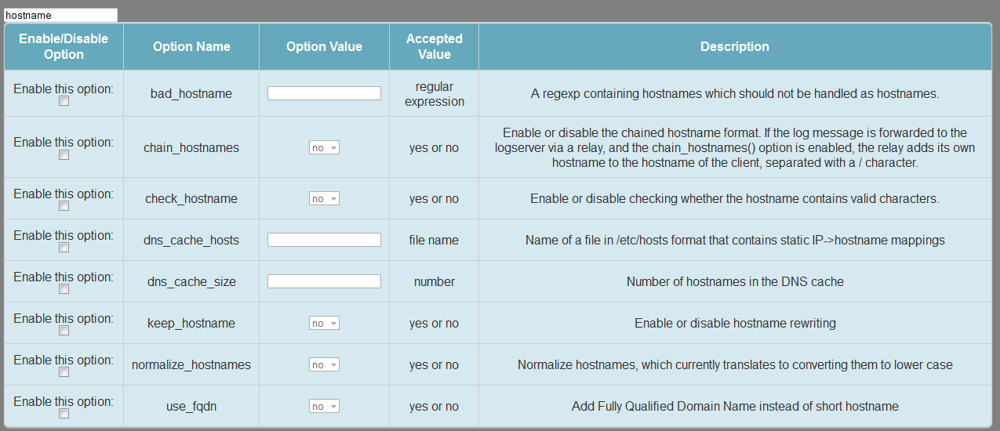
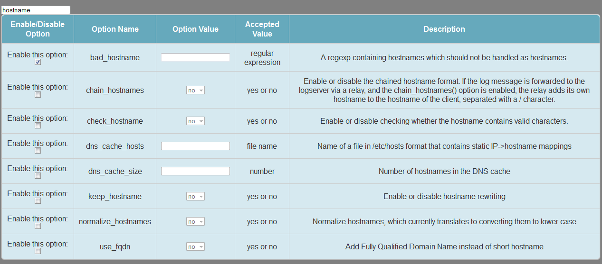
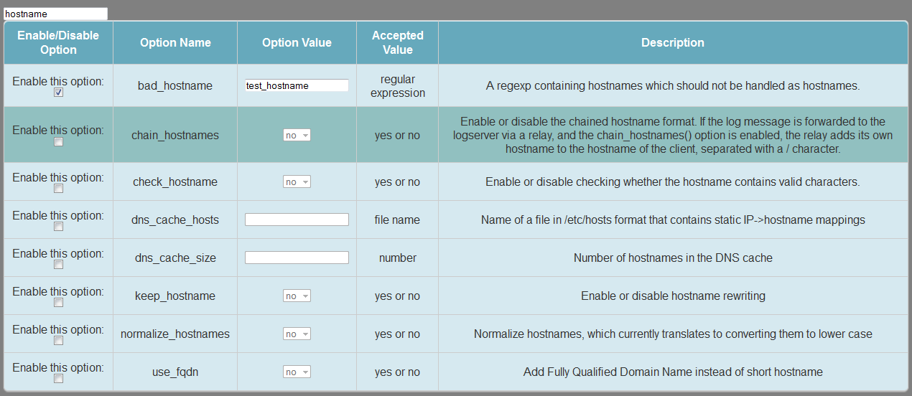
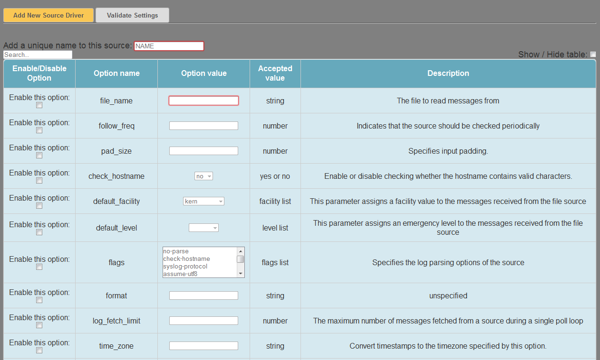
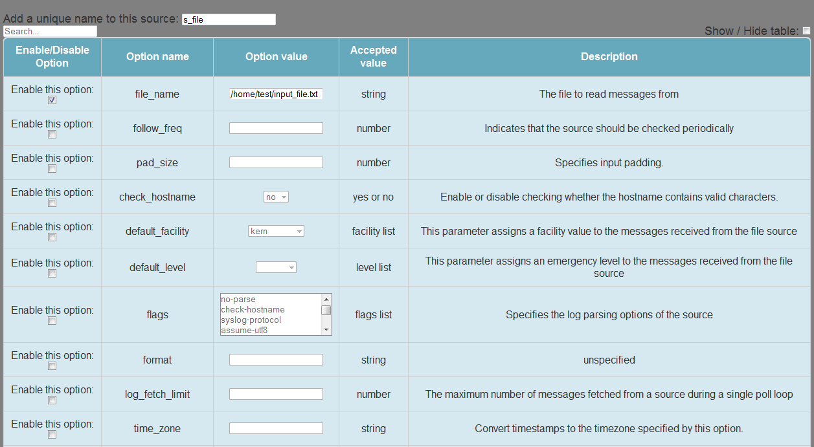
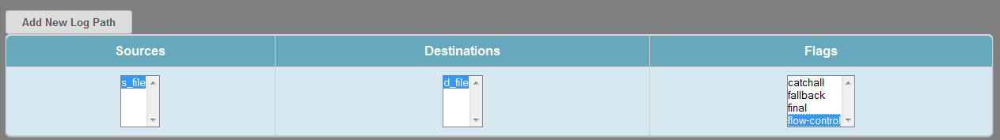
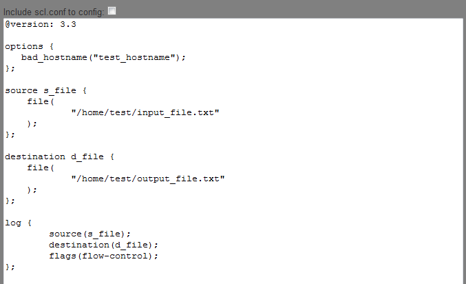

You can use the search input field which is on the top left side of the table for searching options.
You must enable each selected option with the checkboxes.
After you enabled the option, you can add a value for it.
In the driver pages (source or destination) at first you must add new driver with the "Add New Source Driver" or "Add New Destination Driver" buttons.
Every driver has a unique source or destinatination name and may have several required options. You must fill this input fields before you leave the actual configuration page.
On the logpath page at first you must add a new logpath with the "Add New Log Path" button. After this you can connect source drivers with destination drivers and logpath flags.
In the bottom TextArea you can check your configuration.
